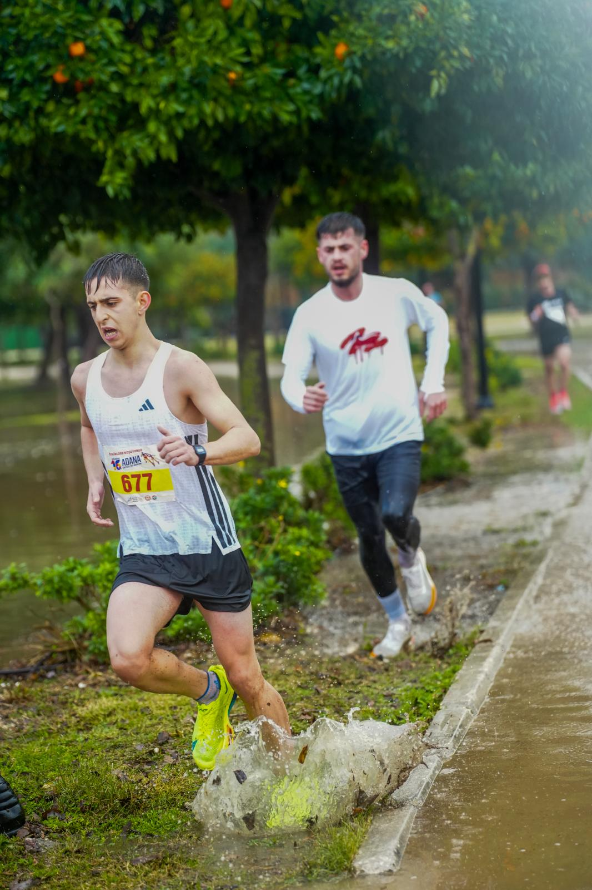
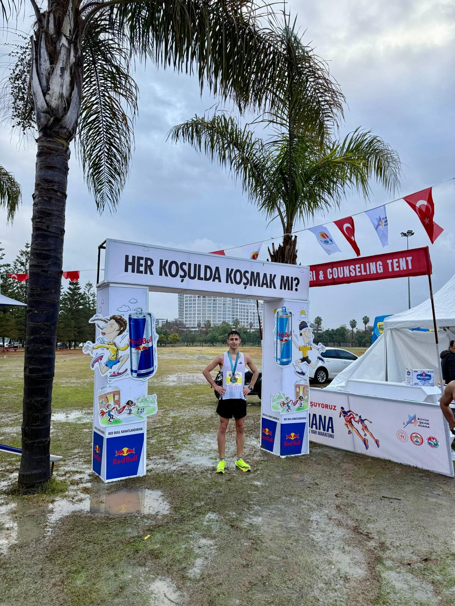

Parkurda, adım adımAtletizm ve dayanıklılık yolculuğumdan
YEK Wellness · Hakkımda
Ben Yusuf Emre Karabörk. Atletizm ve maraton koşularıyla hayatıma yön veren disiplin, hareket ve sürdürülebilir iyi yaşam alışkanlıklarını paylaşmak için buradayım.
Ürün rehberini incele
Yarış gününden bir anSahadan kareler
Her antrenman ve yarış; istikrarın, sabrın ve küçük adımlarla ilerlemenin değerini hatırlatıyor.

Yolculuğum
TAF federasyonunda koşucu ve atletizm sporcusu olarak antrenmanlara ve maraton koşularına katılıyorum. Koşu benim için yalnızca bir mesafe tamamlamak değil; düzenli hareket etmenin, hedef koymanın ve kararlılıkla sürdürmenin günlük hayata kattıklarını deneyimlemek demek.
YEK Wellness çatısı altında Herbalife bağımsız distribütörü olarak ürünler hakkında anlaşılır ve özenli bilgilendirme sunuyorum. Ürünleri tanıtırken kişisel beklentileri dinlemeyi, etiket ve kullanım bilgilerini birlikte incelemeyi önemsiyorum. Her ürün ya da yaklaşım herkes için aynı sonucu vermez; seçim kişisel ihtiyaçlara ve güncel ürün bilgilerine göre değerlendirilmelidir.
Ürünler ve kullanım bilgileri hakkında sorularınız varsa bana WhatsApp’tan yazabilirsiniz.
WhatsApp’tan ulaşın